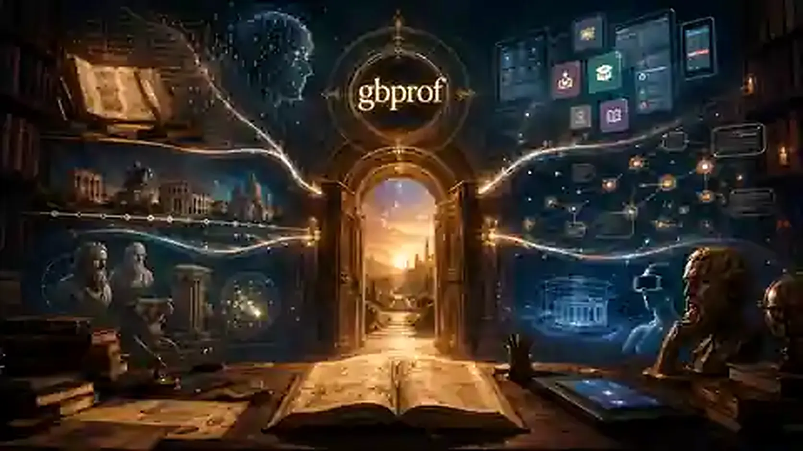

III anno
Percorsi e materiali didattici del terzo anno.
Apri il progetto →
Un unico accesso a lezioni, percorsi, strumenti, laboratori e sperimentazioni. I progetti restano autonomi; qui diventano un ecosistema.
Non una collezione di cartelle, ma una mappa. Ogni area raccoglie progetti diversi senza confonderne struttura e identità.
III, IV e V anno, filosofia, competenze e percorsi disciplinari.
PWA e utility per studiare, organizzare, annotare, collegare e presentare.
Intelligenza artificiale, 3D, VR, ambienti immersivi e sperimentazione.
Saggi, conversazioni, progetti indipendenti e repository futuri.
I progetti restano autonomi e vengono raggiunti attraverso percorsi pubblici del dominio gbprof.it.
Percorsi e materiali didattici del terzo anno.
Apri il progetto →Percorsi e materiali didattici del quarto anno.
Apri il progetto →Letteratura, storia e percorsi del quinto anno.
Apri il progetto →Autori, concetti e percorsi di storia della filosofia.
Apri il progetto →Attività, prove e percorsi orientati alle competenze.
Apri il progetto →PWA e strumenti digitali per il lavoro, lo studio e l'organizzazione.
Apri il progetto →Un dominio.
Una porta.
Molti mondi.
gbprof non ingloba i progetti: li rende raggiungibili. Ogni repository conserva autonomia, cronologia e possibilità di crescita.
gbprof.it/
├── III-anno/
├── IV-anno/
├── V-anno/
├── Filosofia/
├── UTILITY/
├── Competenze/
└── … nuovi progetti